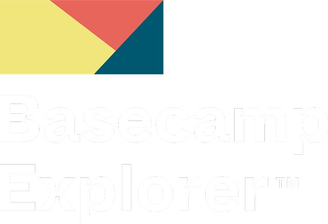

25 Years at the Edge of the World
Basecamp Explorer operates at the edge of the world — running expeditions and exclusive stays across three iconic Svalbard properties. Their guests are not casual tourists; they are high-value international travellers seeking authenticity, adventure, and an experience that cannot be replicated anywhere else on earth.
The mandatory armed escort for any outdoor activity — polar bear protection — is not a liability. It is part of the story. Basecamp Explorer's model is built around the full-package experience: accommodation, expedition, and guided journey as one seamless offering.
Remote wilderness, accessible only by snowmobile, boat, or helicopter.
Set beside the glacier — the most remote of the three properties.
The urban base before and after expeditions into the wilderness.